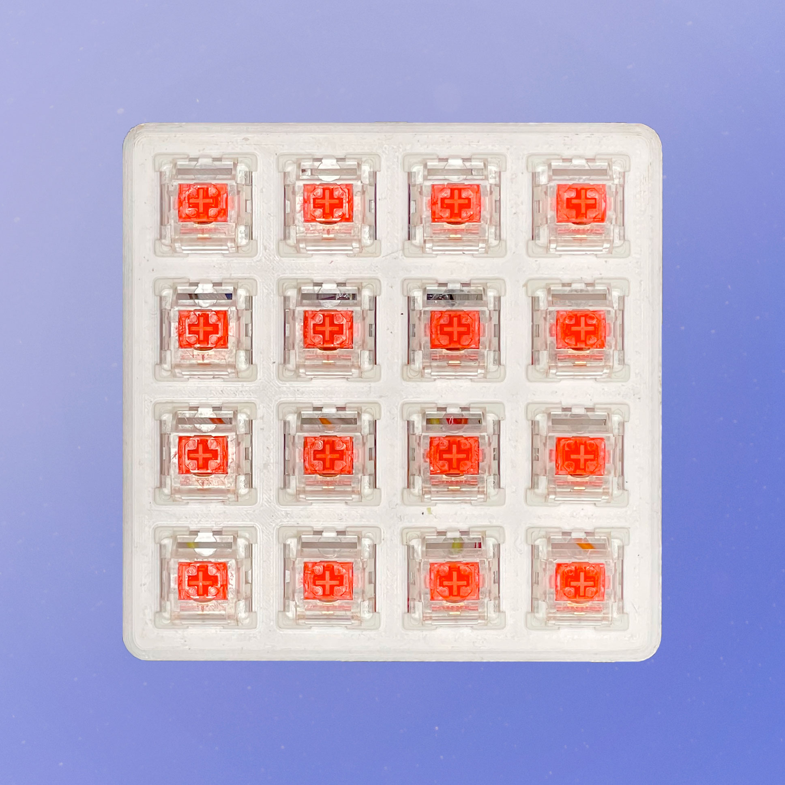
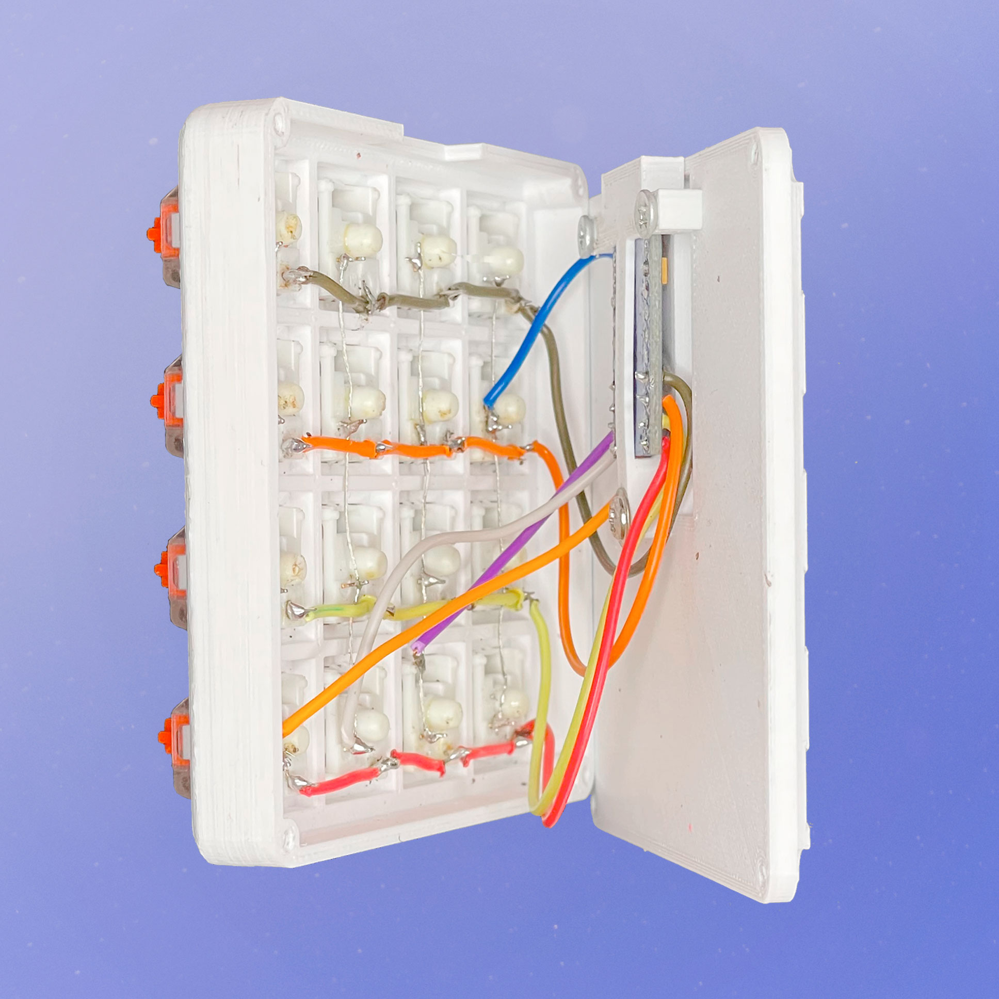
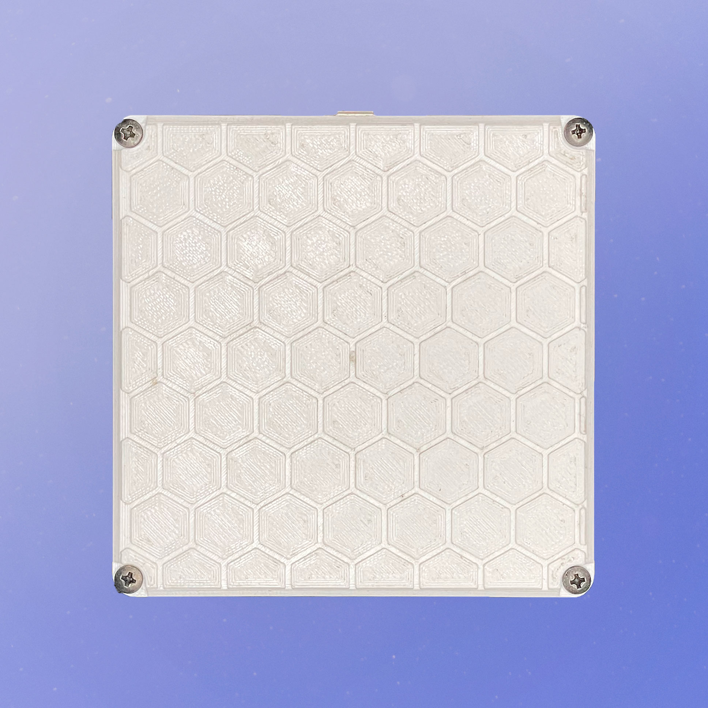

Teclado macro impreso en 3D con Arduino




Este teclado fue creado con el fin de usar atajos y es muy cómodo para usarlo con distintas aplicaciones como VS Code, OBS Studio, Adobe Photoshop, entre otras aplicaciones/juegos.
Se usó un Arduino programado con QMK Firmware, junto a una carcasa y keycaps impresas en 3D. Los switches son de una marca genérica y la soldadura fue hecha por mi.